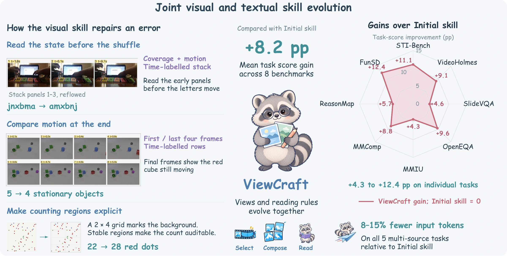
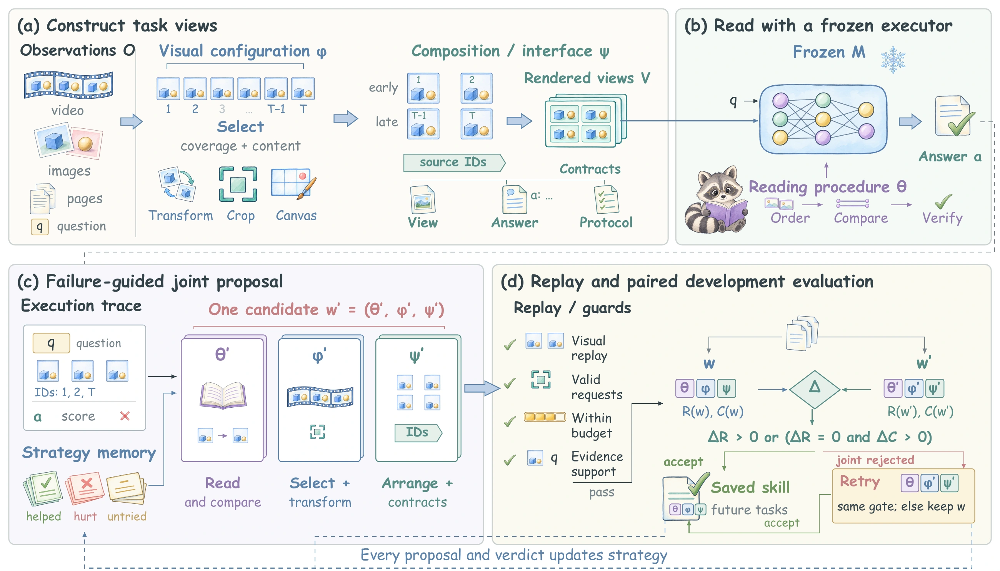

ViewCraft
Evolving What Multimodal Agents See
and How They Read It
An agent’s answer is only as good as its view.
Jointly evolve the evidence interface and the procedure that reads it, then reuse the skill.

A good answer starts
with a better view.
A missing video moment, an unreadable field, or a poorly arranged image can make a task hard before reasoning even begins. Changing the views also changes what the agent needs to do with them.
ViewCraft saves both sides as a reusable skill: an executable evidence interface and a procedure for reading its output. Failure traces guide revisions. Replay checks the views. Paired evaluation decides what to keep.
Select & transform
Choose relevant moments, crops and visual detail.
Compose views
Arrange evidence with layout, labels and contracts.
Read & reason
Interpret the relationships exposed by those views.
Build. Read. Evaluate. Evolve.
Keep a useful visual revision even when its paired reading change fails.

Propose from failures
Use execution traces to revise the evidence interface and its reader together.
Check before retaining
Replay visual edits, apply execution guards, then compare on paired development items.
Recover useful views
For eligible rejected joint edits, retry the candidate interface with the incumbent reader.
Gains across all eight tasks.
Held-out task scores pooled over three runs. Mean weights each task equally.
More than a larger input budget.
ViewCraft stays 5.2 points ahead of token-matched Direct. It uses fewer tokens than Initial skill on multi-source tasks, while adding input cost relative to Direct. The paper reports a 7.6-second latency increase per item over Direct.
Ten skills. Bring your own inputs.
Ready-to-run workflows for documents, images and video, with evidence-aware answers.
PDF research & evidence
Read manuals, reports and papers with page-level evidence.
View skill ↗02Dense object counting
Count objects by region while avoiding double counting.
View skill ↗03Visual difference inspection
Locate changed, removed and relocated objects.
View skill ↗04Visual maze navigation
Trace passages and verify routes against walls.
View skill ↗05Chart analysis
Interpret axes, legends, units and data comparisons.
View skill ↗06Visual table extraction
Preserve row and column structure in CSV or JSON.
View skill ↗07Document revision review
Align versions and identify substantive changes.
View skill ↗08Screenshot diagnosis
Read visible errors and choose the next diagnostic check.
View skill ↗09Video event search
Track events and state changes through timestamped frames.
View skill ↗10Diagram & workflow reasoning
Follow connectors, branch conditions and feedback loops.
View skill ↗Run a task skill directly on images, PDFs or video with the ViewCraft executor. PDF rendering and timestamped frame extraction are included in the runner. This library is maintained separately from the paper’s benchmark artifacts. The code repository is currently private; access is required to view the files.
Abstract
Reusable skills improve multimodal agents without updating model weights, but their effectiveness depends on both the evidence presented and the procedure used to read it. We introduce ViewCraft, which jointly evolves an executable evidence interface and its reading procedure. The interface selects, transforms, and organizes observations; the reader interprets the resulting views. Failure traces guide revisions, replay and paired evaluation retain useful changes, and interface projection recovers visual edits from eligible rejected joint proposals. Across eight benchmarks, ViewCraft improves over direct execution by an average of 6.1 points in task score, with gains on every benchmark. The advantage persists at a matched input-token budget. On all five multi-source tasks, the learned interface uses 8–15% fewer input tokens than Initial skill. The learned skills also transfer across executors and outperform direct execution in every evaluated transfer, supporting evidence construction and reading as a coupled, reusable skill.
Cite ViewCraft.
Preprint citation. The arXiv identifier will be added after submission.
@misc{xu2026viewcraft,
title={ViewCraft: Evolving What Multimodal
Agents See and How They Read It},
author={Binxiao Xu and Ruichuan An and
Bocheng Zou and Weihua Du and Xinyu Wei
and Hangyu Guo and Renye Yan and
YiFan Zhang and Hang Hua},
year={2026},
note={Preprint}
}